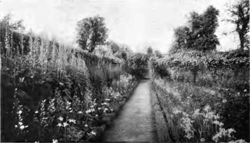

Shrubs In The Flower Garden. Part 3
Description
This section is from the book "Flower Gardening", by H. S. Adams. Also available from Amazon: Flower gardening.
Shrubs In The Flower Garden. Part 3
One of the unfortunate things about shrubs in the North is the lack of true blue, violet and purple shades in the bloom. There are enough shrubs to supply it, but these colors do not seem to go with the ability to stand severe cold. The Chinese and Japanese buddleias, which are fairly hardy in the North when planted in a sheltered location, are in this class. The false indigo (Amorpha fruticosa) and the blue spirea (Caryopteris mast acanthus) have the same relative hardiness. The beautiful blue hybrids of ceanothus are less to be relied upon above the latitude of Washington, though Gloire de Versailles has pulled through the win-. ter near New York. This is a fine variety to contrast with the hardy native New Jersey tea (Ceanothus americanus), which has white flowers.
Several shrubs with pea-shaped bloom are useful for secondary effects. Pink, purplish and white blossoms are furnished by four species of tick trefoil (Desmodium). These bloom late and their growth is such that they may be placed in any herbaceous border. The bladder senna (Colutea arborescens) will add yellow tinged with red and there are some fine new forms of broom—sometimes listed now under cytisus instead of genista. The Schipka cytisus (C. Schipkaensis), with whitish blossoms, is quite hardy.
The dwarf barberries are worthy of a place in the garden for three good reasons—blossoms, foliage and fruit. The common European barberry (Berberis vulgaris), either the type or the kind with purple foliage, ought to be grown more on the garden's edge than it is; in autumn, especially, it is splendidly effective. Then there are the beautiful species of elder (Sambucus), of sumac (Rhus) and currant (Ribes), in themselves sufficient to make a garden of great variety; the several tamarisks, some of which are great improvements on the old; the French mulberry (Callicarpa), which has an abundance of showy fruit, as well as graceful growth; one or two good aralias, the old-fashioned, sweet-scented shrub (Calycanthus) and half a dozen worth-while St. John's worts (Hypericum ). Privet, notably the new Japanese Ligustrum Ibota, has fine white bloom, but the odor is rather strong for the garden.
Roses creep into the shrub category of convenience, just as some of the trees do. The standard, or tree, roses are serviceable only for formal layouts and without professional care they are apt to be more bother than they are worth. The best roses to consider as shrubs are those that make big bushes, such as the old-fashioned damask and Madame Plantier. Then there is the sweet brier; nothing is fairer than the type, but the Lord Penzance hybrids offer darker pink and ecru tones. Coarser single blossoms and foliage are provided by the ramanas rose (Rosa rugosa), which has semi-double forms now. Harison's yellow and Rosa mul-tiflora japónica, the latter for massing in loose effect, are two more of the many good bush roses.
There can be no rule as to what extent shrubs shall figure in hardy gardens and borders. The only thing to do is to count them as available material of permanence—like the perennials, only not herbaceous—and work with them to the best advantage. They are very serviceable in small gardens to raise the height of the center or rear of a bed or border, to define entrances and to multiply vistas by blocking a view. In long borders they may be made to form bays for perennials; or there may be a dotting of them for accents of flower color or evergreen foliage.
Perennials, biennials, annuals and bulbs all work in well with shrubs, if the planting is done with . understanding. There is no better place for some of the best lilies than among rhododendrons. And there are perennials that enjoy, if they do not demand, the partial shade that planting among or near shrubs gives them. Plant such accordingly; the other perennials in the open spaces. Where shrubs are placed far apart to provide for future expansion, mass perennials—they can be removed later—or use a combination of spring bulbs and annuals or biennials.
Often the best results with shrubs are obtained by using them chiefly for a more or less formal massing around the garden. Privet, hawthorn, al-thea, barberry and flowering quince are among those available for clipped hedges. Generally the naturalistic effects are the most beautiful of all.
For these plantings, and for shrubberies anywhere else on the grounds, draw upon other classes of plants to fill every bit of space that is going begging. Whether the spaces offers full sun, half shade or complete shade, some plant will find it a congenial home. Shrubberies are always a good place for plants that you would like to grow but have not the room for in the garden; or perhaps they do not suit the scheme there. Straight edgings are allowable when circumstances warrant them, but naturalistic colonies are best.
"Abroad there are myriads of the Spanish iris (I. hispánica) and the English iris (I, anglica) in the early summer gardens".
The space under shrubs of a spreading habit need never go to waste. Under deciduous shrubs it is just the spot for permanent colonies of small bulbs which it is often risky to grow in the garden, where their location in little groups is easily lost sight of. Similarly the foam flower (Tiarella cordifolia) and other shade-loving carpeting plants will gladly cover the ground beneath shrubs. A bulb and a carpeting plant may be used together or two different bulbs colonized.
Shrubs have an April to October range of bloom with the greatest burst of it in May and June. The sweet gale (Myrica) and Mahonia japonica are due in February and March and Daphne me-zereutn in the latter month, while the witch hazel holds off until November; but between October and April color must largely be a matter of foliage and fruit. Fortunately shrubs are so generous in these two respects that planning for the entire year is possible.
As with perennials, shrubs should be planted for long succession. Thus the forsythia, Spiraea van Houttei, althea and Hydrangea paniculata are a good sequence, that may be lengthened by adding Berberis Thunbergii and Ilex opaca for the completion of a year's circle. As a rule, especially in shrubberies, strive to get the successive effects with only one or two species of shrubs. No mixed bloom can begin to make the picture that is created by a massing of Spiraea van Houttei or pink weigela alone, or laburnum and purple lilacs together. Clashing shrubs need not be discarded if the place is of any size; there is always room for more somewhere.
Do not mass all of the shrubs. Now and then isolate one and let it give full play to individuality as expressed in its natural form. If inclined to primness, let it be prim; if rambling, let it ramble. This not merely for specimens in the garden or on the lawn, but one standing out in blooming time from a shrubbery background. A shrub that has a great burst of bloom—a magnolia, flame azalea, rhododendron, Hydrangea paniculata, forsythia, Spiraea van Houttei, Dentzia corymbiflora, double Philadelphus coronarius (Boule d' Argent) double white lilac (Madame Casimir Perier), weigela or any of the double-flowered fruit trees— if thus left to itself, will be An annual spectacle, growing in beauty with the fullness of age.
In some cases old wood will have to be removed, but keep the pruning down to the appearance of there not being any. There is always a tendency to over-prune shrubs. Where sheer form of a restrained artificial character is desired, there are shrubs trained in standard, or tree, shape to be had. For the lawn this shape has an advantage in that the grass does not suffer beneath it. The lilac weigela, Azalea mollis, althca, double hawthorn, forsythia, Hydrangea paniculata, double almond and rose acacia (Robinia hispida) are so trained with particular effectiveness. It is also one of the best ways to use that showy vine, the Chinese wistaria. The price is based on the age of the head, two dollars and a half to five dollars; the stem height is five or six. feet in any case.
Continue to:
- prev: Shrubs In The Flower Garden. Part 2
- Table of Contents
- next: Chapter XIV. Spring And Summer Flowers From Bulbs